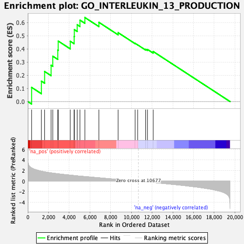
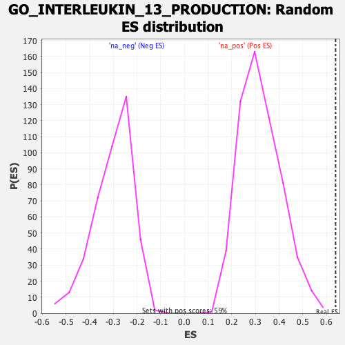

| | | Dataset | CK_basal |
| Phenotype | NoPhenotypeAvailable |
| Upregulated in class | na_pos |
| GeneSet | GO_INTERLEUKIN_13_PRODUCTION |
| Enrichment Score (ES) | 0.63850135 |
| Normalized Enrichment Score (NES) | 2.0040994 |
| Nominal p-value | 0.0 |
| FDR q-value | 0.03513339 |
| FWER p-Value | 0.55 |
Table: GSEA Results Summary

Fig 1: Enrichment plot: GO_INTERLEUKIN_13_PRODUCTION
Profile of the Running ES Score & Positions of GeneSet Members on the Rank Ordered List
| SYMBOL | RANK IN GENE LIST | RANK METRIC SCORE | RUNNING ES | CORE ENRICHMENT | | 1 | LILRA5 | 367 | 2.502 | 0.1076 | Yes |
| 2 | IL25 | 1311 | 1.894 | 0.1549 | Yes |
| 3 | GATA3 | 1623 | 1.769 | 0.2283 | Yes |
| 4 | IL4 | 2247 | 1.569 | 0.2757 | Yes |
| 5 | SCGB1A1 | 2411 | 1.531 | 0.3446 | Yes |
| 6 | IL1RAP | 2893 | 1.408 | 0.3911 | Yes |
| 7 | TNFRSF21 | 2935 | 1.396 | 0.4596 | Yes |
| 8 | TNFSF4 | 4097 | 1.151 | 0.4582 | Yes |
| 9 | IFNA2 | 4473 | 1.075 | 0.4933 | Yes |
| 10 | TSLP | 4491 | 1.072 | 0.5465 | Yes |
| 11 | NLRP3 | 4769 | 1.013 | 0.5835 | Yes |
| 12 | IRF4 | 5035 | 0.962 | 0.6186 | Yes |
| 13 | LGALS9 | 5512 | 0.878 | 0.6385 | Yes |
| 14 | PRKCZ | 6865 | 0.646 | 0.6018 | No |
| 15 | RARA | 8721 | 0.333 | 0.5236 | No |
| 16 | IL33 | 10365 | 0.056 | 0.4421 | No |
| 17 | SPHK2 | 10607 | 0.014 | 0.4305 | No |
| 18 | IFNL1 | 11380 | -0.123 | 0.3971 | No |
| 19 | LEF1 | 11555 | -0.154 | 0.3960 | No |
| 20 | IL18 | 12110 | -0.247 | 0.3801 | No |
Table: GSEA details [plain text format]

Fig 2: GO_INTERLEUKIN_13_PRODUCTION: Random ES distribution
Gene set null distribution of ES for GO_INTERLEUKIN_13_PRODUCTION